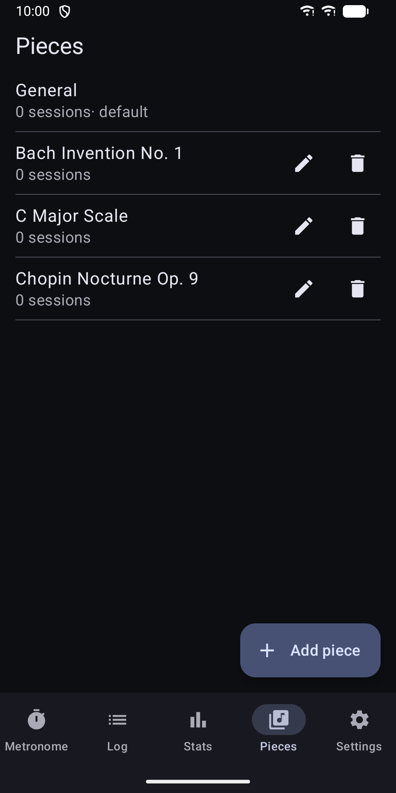
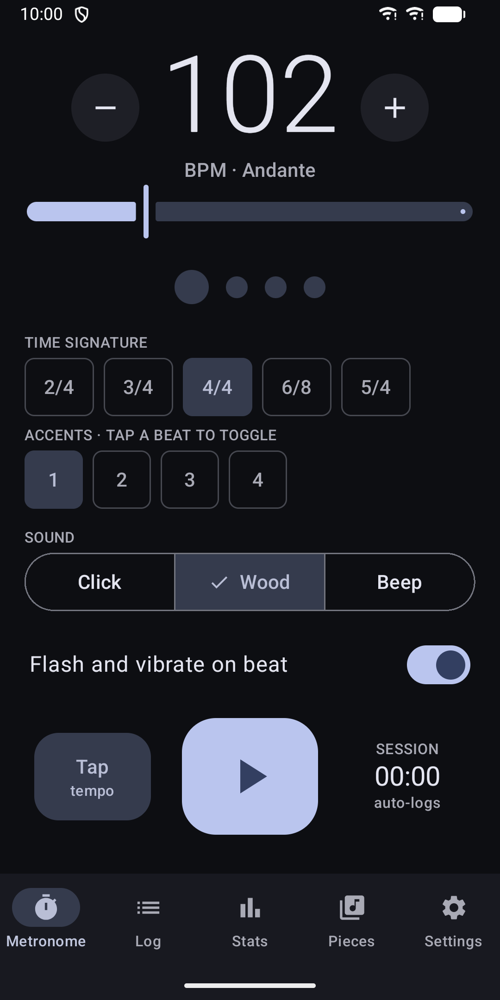
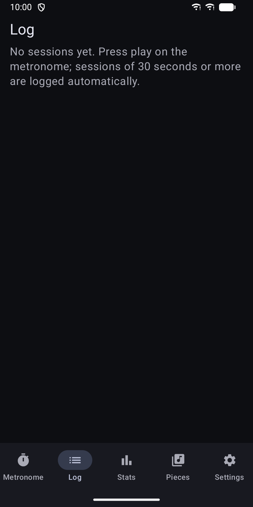

Metronome & Practice Log
Metronome that logs your practice time automatically and tracks your streak






About
Press play and practise. Metronome & Practice Log keeps time and writes your practice diary for you. A METRONOME YOU CAN RELY ON - Tempo from 30 to 300 BPM with large minus and plus buttons, a slider and tap tempo - Time signatures 2/4, 3/4, 4/4, 5/4 and 6/8, with accents you set for each beat - Three sounds: click, wood and beep - Screen flash and vibration on the beat, with one simple switch for both - Steady timing in the background and with the screen off, with a notification to pause PRACTICE LOGGING WITHOUT EXTRA TAPS - A session starts when you press play and ends when you pause - Sessions shorter than 30 seconds are ignored - Assign a piece, or log to "General" - Each session saves its time signature, your last tempo and the time-weighted average tempo - Edit or delete any session, with undo - Add, rename and delete your pieces SEE YOUR PROGRESS - Daily streak: every day with at least one minute of practice counts - Bar chart of your last 7 days PRO (ONE-TIME PURCHASE) These features need the Pro purchase: - Export your log as CSV or JSON to a file you choose - Full graphs: 12 weeks of practice time and tempo progress for each piece - Accent colour themes - Home-screen widget with your streak, today's time and the last 7 days The metronome, automatic logging, streaks and the 7-day chart work without it. YOUR DATA STAYS ON YOUR DEVICE - The app has no internet permission - No account, no analytics, no crash reporting - No cloud backup of your practice data. It stays on this device unless you export it. MADE TO BE EASY TO USE - Follows your system light or dark mode - Works with TalkBack: controls are labelled, the tempo is one adjustable control, and charts have a spoken summary - Large touch targets for quick use on a music stand - Phone and tablet layouts. On tablets, the metronome and your log sit side by side. Contact: apps@schimpf.es
Guides
- How to Calculate Average BPM of a Practice Session Work out the time-weighted average tempo of a practice session when you change BPM along the way, with a worked example and common mistakes.
- BPM to Milliseconds Calculator and Formula Convert BPM to milliseconds per beat with one formula, worked examples, and a table of note lengths from whole notes to sixteenths.
- Tempo Markings BPM Chart: Largo to Prestissimo A chart of Italian tempo markings with BPM ranges, what each one feels like, and how to find the right marking for your piece.